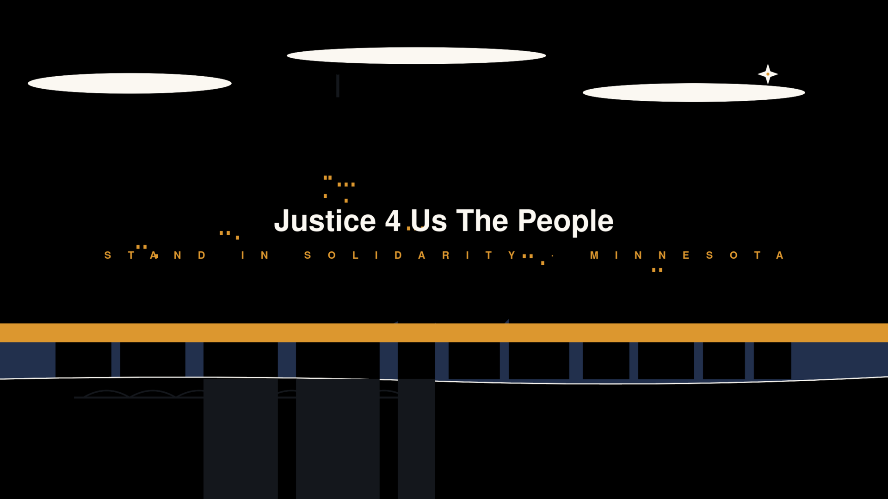

Justice 4 Us The People
Stand in solidarity · Minnesota
A neighbor-led movement · Minnesota
In the Twin Cities, neighbors look out for one another.
When an eviction notice lands.
When the fridge is empty.
When a court date arrives without a lawyer.
When the fridge is empty.
When a court date arrives without a lawyer.
Every person carries
an unshakable dignity.
an unshakable dignity.
Three doors. One answer: you are not alone.
Door 1
Rental & utility relief
Door 2
Food on the table
Door 3
Legal navigation
Immigrant-led. Community-rooted.
We belong to one another.
We belong to one another.
Legal aid clinics
Food shelves
Sanctuary congregations
Rapid-response network
Know your rights · Conozca sus derechos
"I do not consent to a search."
"No doy mi consentimiento para un registro."
Justice 4 Us The People
justice4usthepeople.org
612 · 424 · 1785